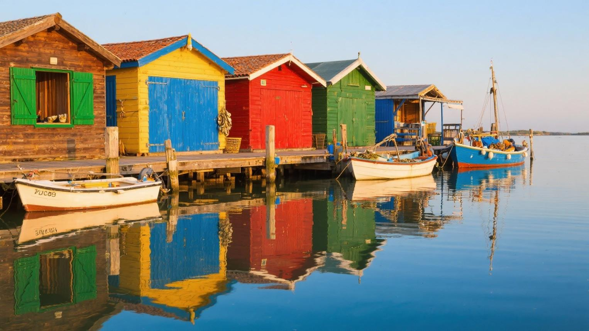
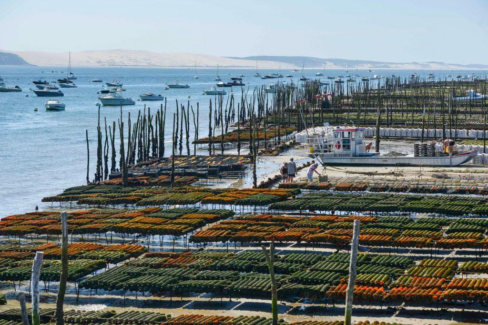

Huitres du
Bassin
d' Arcachon


⟹ Plats Emblématiques ⟸
Les huîtres du Bassin d'Arcachon occupent une place privilégiée dans le patrimoine gastronomique de la côte atlantique. Depuis plus d'un siècle, elles participent à l'identité culturelle et économique de ce territoire unique, où l'ostréiculture rythme la vie des ports, des villages et des cabanes traditionnelles.

Bien avant l'apparition des techniques d'élevage modernes, les habitants du Bassin récoltaient déjà les huîtres présentes naturellement dans les eaux locales. Au cours du XIXᵉ siècle, la diminution progressive des bancs sauvages pousse les producteurs à développer de nouvelles méthodes de culture. Cette évolution marque le début de l'ostréiculture moderne dans la région.
L'essor de la profession repose notamment sur l'utilisation de supports spécialement conçus pour capter les jeunes huîtres, permettant ainsi de maîtriser leur élevage dès les premiers stades de développement. Grâce à ces innovations, le Bassin d'Arcachon devient progressivement l'un des principaux centres ostréicoles français.
Les producteurs locaux bénéficient d'un environnement particulièrement favorable. Les marées, l'apport des eaux océaniques et la richesse naturelle du Bassin créent des conditions idéales pour la croissance des coquillages. Cette combinaison donne naissance à des huîtres reconnues pour leur fraîcheur, leur texture charnue et leur équilibre gustatif.

Aujourd'hui encore, l'ostréiculture demeure une activité emblématique du Bassin d'Arcachon. Les exploitations familiales perpétuent un savoir-faire transmis de génération en génération, tout en s'adaptant aux exigences contemporaines de qualité et de préservation de l'environnement.
Les huîtres du Bassin séduisent par leur caractère authentique. Leur chair généreuse révèle des saveurs marines délicates, accompagnées selon les zones de production de nuances végétales, minérales ou légèrement sucrées. Cette diversité aromatique contribue à leur réputation auprès des amateurs de fruits de mer.
Cette tradition ostréicole fait aujourd'hui partie intégrante de l'identité du Bassin d'Arcachon, où la culture de l'huître demeure l'un des symboles les plus forts du patrimoine maritime de la Gironde.

Huîtres du Cap Ferret : délicates et équilibrées, avec des notes végétales et d'agrumes.
Huîtres de l'Île aux Oiseaux : caractère plus affirmé avec une forte expression marine.
Huîtres du Banc d'Arguin : saveurs douces et légèrement lactées.
Huîtres chaudes gratinées : préparées au four avec une légère persillade ou une sauce au vin blanc.
L'expérience des huîtres d'Arcachon se vit au plus près des cabanes ostréicoles et des ports traditionnels.
Gujan-Mestras Considérée comme la capitale de l'ostréiculture du Bassin avec ses sept ports ostréicoles et sa célèbre Maison de l'Huître.
Arcachon Ville historique du Bassin où les huîtres sont présentes sur toutes les cartes de fruits de mer.
Lège-Cap-Ferret Réputée pour ses villages ostréicoles authentiques et ses dégustations face aux parcs à huîtres.
Andernos-les-Bains Important centre ostréicole offrant de nombreuses dégustations en bord de Bassin.